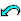

 Restart Identification
This button starts a new identification. To identify a specimen:
- Press the "Restart identification" button.
- The top-left pane shows a list of characters. Normally, the pane is headed "Best Characters" and the best characters are at the top (if not, you can restore this setting by pressing the "Best order" button). Click on a character.
- The program displays a list of character states, or a box for entering values such as lengths. If there is an illustration for the character, it will be normally be displayed automatically (if not, press the "Images" button). Most characters have explanatory notes, which may be viewed by pressing the "Notes" button. Click on the state, or enter the value, that applies to your specimen, and press "OK". If you are not sure, do not guess a single state or value. Instead, click on more than one state, enter a range of values, or press "Cancel" and try another character. To deselect a previously selected state, click on it again.
- The "Taxa Remaining" (top-right) pane shows the taxa that match the information that you have entered. The "Taxa Eliminated" (bottom-right) pane shows the taxa that do not match, with the number of mismatches in parentheses. Repeat from step 2 until "Identification complete" or some other message is displayed in the top-left pane. A "Help" button is also displayed; press this to obtain information on how to proceed (for example, how to confirm the identification).
If, at any stage, you think you have made a mistake and want to correct it, click on the appropriate character in the "Used Characters" (bottom-left) pane. The program again displays the box for selecting character states or entering values, and you can change the information you previously entered. You can remove the character from the identification by clearing all the information.
 "Best" Order
"Best" Order
This button displays the characters in the top-left pane in order of their merit for separating the remaining taxa in an identification. The merit of a character is calculated partly from its separating power, and partly from its "reliability" or ease of use.
In Advanced operating mode, the separating powers of the characters are shown at the left each line. A separating power of 1 corresponds to a division of the group of remaining taxa into halves, and a value of 0 indicates very poor separation. See Section 5.4 of the DELTA User"s Guide for more details.
 "Separate a given taxon" Order
"Separate a given taxon" Order
This button displays the characters in the top-left pane in order of their merit for separating a particular taxon from the other remaining taxa in an identification. The merit of a character is calculated partly from its separating power, and partly from its "reliability" or ease of use. The separating powers of the characters are shown at the left each line.
 Natural Order
Natural Order
This button displays the characters in the top-left pane in the order in which the author placed them in the character list.
Warning. Unless you are familiar enough with the data to know that certain character values exhibited by your specimen will eliminate a good proportion of the taxa at the current stage of the identification, you should use the "Best" order instead.
Differences between the Specimen and the Remaining Taxa
This button displays the differences between the specimen and the remaining taxa. The specimen may not exactly match the remaining taxa because: (a) their attributes may be overlapping but not identical; (b) the specified characters may be unrecorded or inapplicable for the remaining taxa; (c) the error tolerance may have been set to allow mismatches.
 Error Tolerance
Error Tolerance
This button allows you to set the "error tolerance" for an identification. A taxon will remain under consideration until the number of differences between it and the specimen is greater than the error tolerance. You should increase the current value by 1 if you are aware that you have made a mistake in an identification (because the illustration or description of the remaining taxon does not correspond to your specimen) but you do not know what the mistake is. Then continue the identification as before. The name of each remaining taxon will be preceded by a number in parentheses, indicating the number of differences between the specimen and the taxon.
The error tolerance also allows a correct identification when there are errors in the database.
Increasing the error tolerance and continuing with the identification also provides a way to increase your confidence in an identification, even when no error is apparent.
Set Match
This button allows you to specify which character values are to be regarded as effectively equal or "matching" in identification and queries (when the program eliminates taxa which do not "match" the specified attributes), and in the calculation of differences and similarities between taxa. For details, see the help for the "Set Match" command, which is available via the main "Help" menu, or by pressing the "Help" button in the "Set Match" dialog box.
Regardless of the current "Match" settings, the "Differences between the specimen and the remaining taxa" button always uses settings equivalent to "Match Exact", and the "Differences between taxa" button always uses settings equivalent to "Match Unknowns Inapplicables". To obtain differences in terms of the current "Match" settings, use the "Differences" option in the "Queries" menu.
Use a Subset of the Characters
This button allows you to choose a set of characters to be used in subsequent operations.
N.B. The set of characters persists until changed by using the button again. In particular, it is not affected by starting a new identification.
 Find Text in the Characters
Find Text in the Characters
This button allows you to search for text in the "Characters" (left-hand) panes. The characters found are shown in blue. By default, only the lines in the top-left pane are searched. Check boxes allow the search to be extended to the bottom-left pane and to the character states.